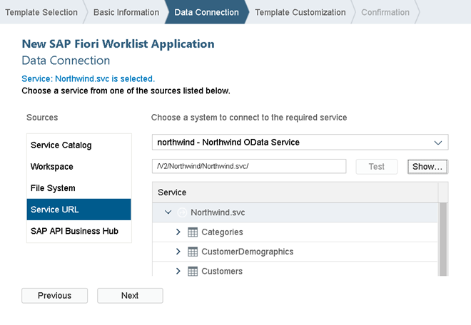
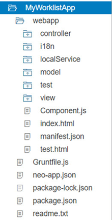

Step 1 (Option 1): Creating the Initial App with an App Template in SAP Web IDE
This first step is only relevant if you decided to use the SAP Web IDE. In this step, we will set up the worklist app using a template and configure the service to display products in the app. The template includes generic app functionality and tests that can be easily extended with custom functionality for our use case.
Prerequisites
Set up your SAP Web IDE and define a destination to the Northwind OData service as described under App Development Using SAP Web IDE.
Preview
Create the Initial App Using the Template Wizard
-
Launch SAP Web IDE.
-
Choose
 File
File  New Project from Template
New Project from Template
-
Select the SAP Fiori Worklist Application template, and choose the latest SAPUI5 version from the SAPUI5 Version dropdown box. Choose Next.
-
On the Basic Information screen, enter MyWorklistApp as project name. Enter the following data:
App Descriptor Data Field
Value
Description Title
Manage Products
Title of the app, which will be displayed as header.
Namespace
mycompany.myapp
The application namespace is a unique identifier for your application resources.
Description
My Worklist App
Short description of your app.
Choose Next.
On the Data Connection screen, select Service URL in the Sources area.
Choose northwind - Northwind OData Service and enter the URL /V2/Northwind/Northwind.svc/. Validate the URL by choosing Test next to the URL. You should now see the service entities as displayed in the following screenshot:Choose Next.-
On the Template Customization screen, select the following data:
Application Scenario Field
Value
Description App Type
Standalone App
We create a standalone app that can be run without SAP Fiori launchpad (FLP).
If you choose to build an SAP Fiori Launchpad Component, you automatically get test HTML files with the FLP Sandbox, and the app automatically includes additional features like Save as Tile.
Data Binding - Object Field
Value
Description Object Collection
Products
This is the main entity set that will be displayed in the app. Some of the other fields below are automatically selected depending on this field.
Object Collection ID
ProductID
The unique key that is used to identify the object collection.
Object Title
ProductName
The display name of the main entity.
Object Numeric Attribute
UnitsInStock
The number displayed next to the product name. In this scenario we pick the UnitsInStock. This represents the stock quantity of the product.
-
Choose Next and Finish
A new folder MyWorklistApp is now available in your local workspace. It contains the following files and folders of the initial app:
Folder structure of the initial project -
Run the app.
There are several HTML files available in the webapp/test folder, which enable you to run the app with a Mock Server. You can also use them to run unit tests and OPA tests.
You should see the screen, which contains generated mock data.
From now on you can quickly run the app by selecting the root folder MyWorklistApp of your project in SAP Web IDE and pressing the Run button. The system will automatically use the option from the Run menu that you chose last (in this case, the Run with MockServer option).